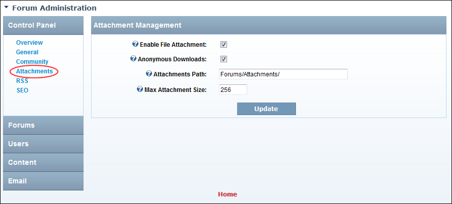

Enabling/Disabling Attachments
How to enable or disable the attaching of files to forum posts, as well as configure additional attachment settings on the Forums module.
- Go to the Forum Administration page. See "Navigating to the Forum Admin Page"
- In the left-hand panel, select Control Panel > Attachments. This displays the Attachment Management window.
- At Enable File Attachment, to enable attachments - OR - to disable file attachment and skip to Step 7.
- At Anonymous Downloads, to enable files to be downloaded by unauthorized users - OR - to disable. Note: File permissions also control access to files.
- In the Attachments Path text box, edit the location where attachments are stored in the root directory of this site's Digital Asset Management module which is located on the Admin > File Management page. I.e. domain.com../../../../../Resources/
- In the Max Attachment Size text box, edit the maximum size for attachments in KB. Note: Additionally, the size set here should be no larger than what is permitted in the web.config.
-
Click the Update button.

Managing forum post attachments